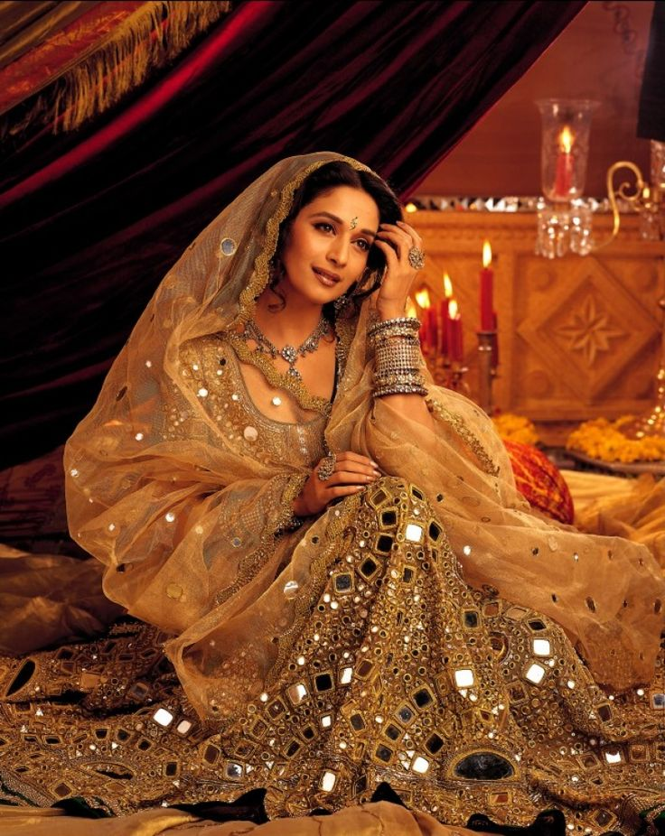

An eminent geographical indication, Shisha saree find their home in the state of Rajasthan.
Shisha, also known as mirror work or abhala bharat embroidery, originated in India in the 17th century. It's a traditional South Asian embroidery that involves attaching small pieces of mirror to fabric to create a reflecting pattern. Some say the technique originated in Iran and was introduced to India by the Mughals. Others believe it originated in the 13th century in Persia and came to India during the Mughal era.
cotton fabric is resist-dyed or block-printed before being embroidered. The shisha mirrors are attached and surrounded by filling and ladder stitches, as well as counted cross stitch. Popular motifs include trefoil, peacock, lotus, flowers, paisley, and delicate geometric patterns.
